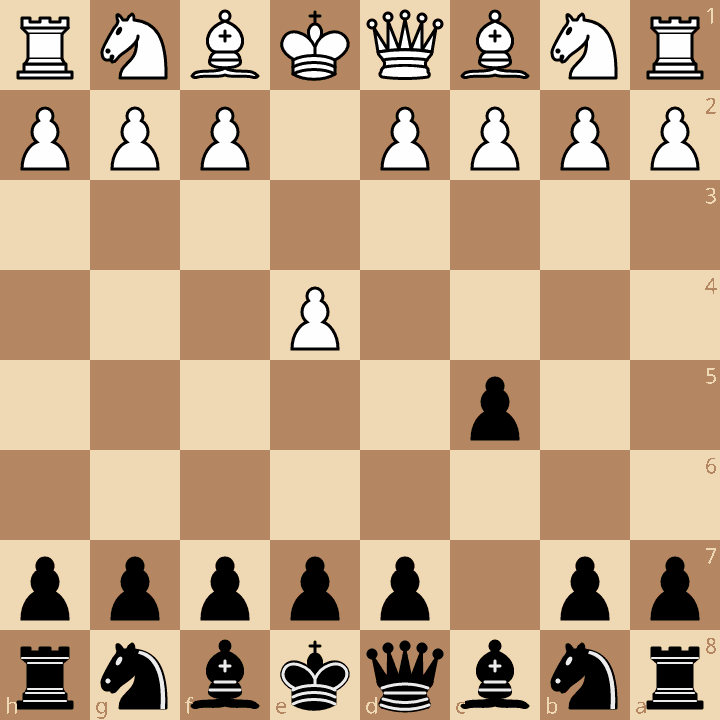
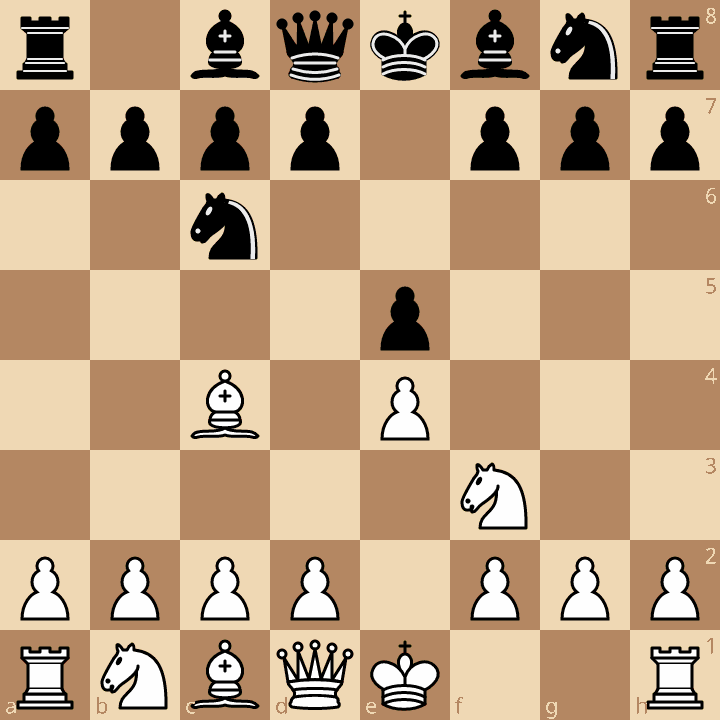
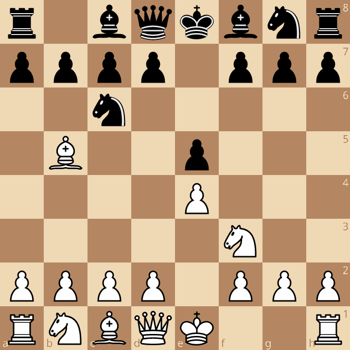
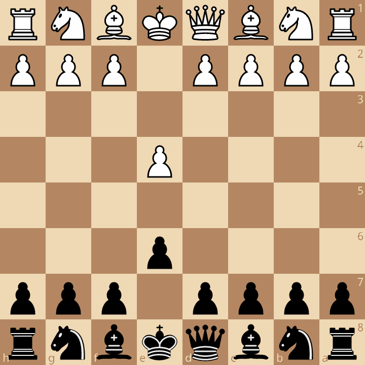
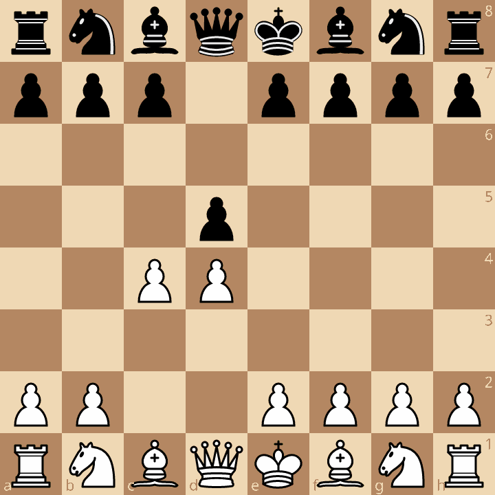
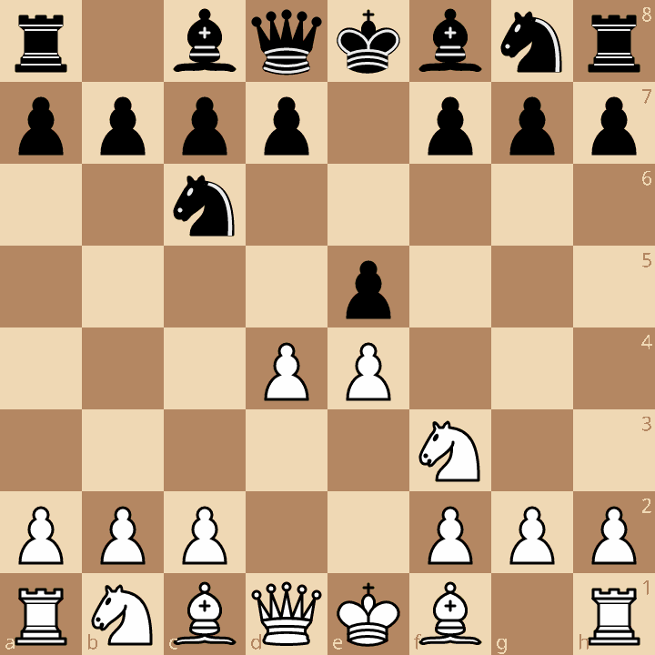

Avausvaiheessa pelaajat kehittävät nappuloitaan ja valmistautuvat keskipeliin. Tälle sivulle on koottu muutamia hyviä pelikelpoisia
avauksia. Avauksia käsitellään varsin pintapuolisesti, eikä eri muunnelmia lähdetä avaamaan.

Sisilialainen puolustus saadaan kun pelataan 1. e4 c5. Valkean yleisimmät siirrot ovat 2.Nf3, Nc3 tai c3. Näihin kaikkiin siirtoihin musta voi pelata e6.

Italialainen avaus saadaan kun pelataan 1. e4 e5 2. Nf3 Nc6 3. Bc4. Hyvin joustava avaus, joka voi
johtaa taktisesti teräviin tai asemallisiin peleihin.

Espanjalainen peli saadaan kun pelataan 1. e4 e5 2. Nf3 Nc6 3. Bb5. Vaatii todella hyvää avausteorian tuntemusta.
Huippupelaajien suosiossa.

Ranskalainen puolustus saadaan kun pelataan 1. e4 e6. Johtaa usein hitaampiin ja asemallisiin peleihin.
Valkea vastaa yleensä pelaamalla 2. d4, Nc3 tai Nf3. Musta voi pelata esimerkiksi 2.d5

Kuningatargambiitti saadaan kun pelataan 1. d4 d5 2. c4. Valkea saa hyvän otteen keskustasta ja hyvän kehityksen.
Musta voi ottaa gambiitin vastaan pelaamalla 2.dxc4. Tällöin valkealla on 2 keskusta sotilasta mustan yhtä vastaan ja avoin c-linja.
Käytännössä musta ei pysty pitämään ylimääräistä sotilasta ilman että se johtaa huonoon asemaan.
Sen takia onkin suositeltavaa hylätä gambiitti ja pelata 2.e6 tai 2.c6. 2.c6 johtaa slaavilaiseen puolustukseen.

Skotlantilainen peli saadaan kun pelataan 1. e4 e5 2. Nf3 Nc6 3. d4. Valkea hyökkää heti keskustaan ja saa tilaedun.
Johtaa teräviin peleihin.